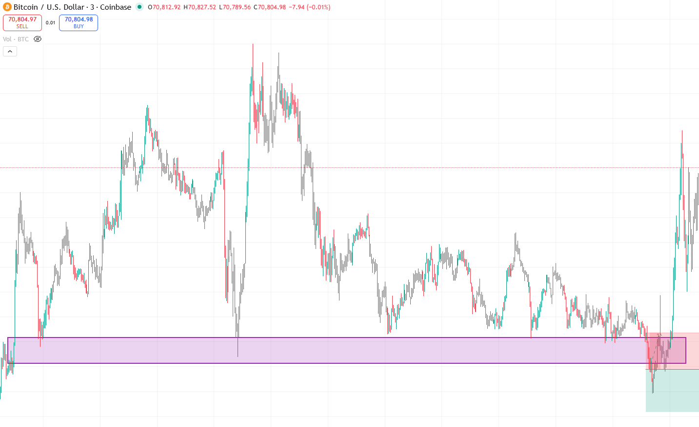

Psychology
This module ties the course together by teaching discipline, routine, emotional control, and the review habits that allow a trader to perform consistently over time.
Discipline is built before the market opens
Psychology is often treated like motivation, but in trading it is mostly structure. Discipline becomes easier when the session has rules, the setups are defined, and you know what a good day looks like even if it ends red. The less room there is for improvisation, the less room there is for emotional damage.
Know your emotional triggers
Every trader has patterns that create poor decisions: fear after a stop-out, impatience during slow sessions, greed after a strong win, or the need to make the day feel productive. Your journal should identify these triggers clearly. Once you can name them, you can build rules that interrupt them before they turn into actions.
Pre-market and post-market routines
A short routine before the session creates focus. A short routine after the session creates learning. Before the market, review structure, key levels, the session bias, and your risk limits. After the market, grade execution, note emotional drift, and save one screenshot that captures the most important lesson of the day.
Psychology improves through review, not willpower
Willpower is unreliable when money is on the line. Systems, routines, and honest review are much stronger. The best traders do not ask themselves to be perfect; they ask themselves to be repeatable. When you review your behavior consistently, weak patterns become visible and discipline becomes trainable.
What matters most in this module
How to review this setup like a trader
Flag Pattern Continuation
Psychology improves when execution has structure. This continuation chart is useful because it teaches patience: waiting for impulse, accepting the pause, and entering only when the pattern confirms instead of reacting emotionally inside the pullback.

Explanation
Many emotional mistakes happen between the impulse leg and the actual trigger. Traders feel they are missing the move and jump in too early. This chart trains the habit of waiting for a complete setup.
Entry
Enter only when the flag breaks with confirmation or when a controlled retest proves continuation.
Stop
Keep the stop beyond the flag low or the invalidation point that clearly cancels the continuation idea.
Targets
Use the next major liquidity zone or a measured move based on the original impulse leg.
Why the course shows losing trades too
False Breakout (Losing Trade)
A mature trader studies losing trades the same way winning trades are reviewed. This chart shows why psychology matters: the setup can look valid, fail anyway, and still be handled professionally when risk is planned in advance.

Explanation
False breakouts are part of trading. Price can break a level, attract entries, and then reverse sharply. This does not automatically mean the trade idea was irrational.
Lesson
The correct response is process-based: accept the invalidation, close the trade at the predefined stop, and avoid the urge to revenge trade immediately after the loss.
Risk
Small, consistent risk keeps one failed setup from damaging the account or the mindset. When risk is controlled, losses stay educational instead of emotional.
Review Focus
Ask whether the setup was valid, whether risk was respected, and whether the exit followed the plan. Judge the execution first, not only the outcome.